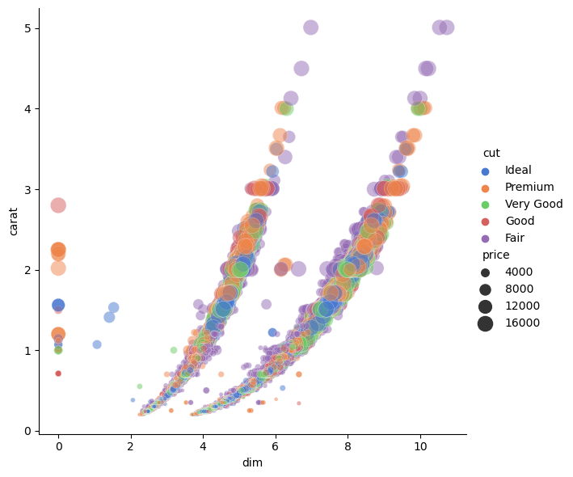

#Import libraries and datasetsimport pandas as pdimport numpy as npimport scipy as spimport seaborn as snsimport daskts_data = dask.datasets.timeseries()df = sns.load_dataset('diamonds')df.head() #inspect dataframe
carat
cut
color
clarity
depth
table
price
x
y
z
0
0.23
Ideal
E
SI2
61.5
55.0
326
3.95
3.98
2.43
1
0.21
Premium
E
SI1
59.8
61.0
326
3.89
3.84
2.31
2
0.23
Good
E
VS1
56.9
65.0
327
4.05
4.07
2.31
3
0.29
Premium
I
VS2
62.4
58.0
334
4.20
4.23
2.63
4
0.31
Good
J
SI2
63.3
58.0
335
4.34
4.35
2.75
#dataframe attributes can be accesseddf.index #name of index, in this case a rangedf.columns #variables carat to zdf.values # values as a numpy.ndarraydf.dtypes # datatypes of variablesdf.shape # rows to column structuredf.ndim # number dimensions#functions are attached to pd.Series can be engageddf.cut # referenced column on its owndf.cut.value_counts() df.cut.unique()df.carat.mean()
0.7979397478680014
DataFrame Functions
Functions are available that are attached to the DataFrame class Common methods are:
filter: Subset the dataframe rows or columns according to the specified index labels.
assign: assign / mutate new columns in dataframe
query: query the columns of a DataFrame with a boolean expression
sort_values : arrange rows of DataFrame
apply : Apply a function along an axis of the DataFrame
#More complex subsetting of dataframe by observations or variables#filter variablesdf.filter(['cut']) #returns pandas.DataFramedf['cut'] # as opposed to this which returns pandas.Series or df.cutdf.filter(["carat","cut"]) #filter more than one variables df.filter(regex="^c") #with regex - a whole other topic..#query observations#The quotes in query need to be single-outside, double-inside df.query('color == "E"') #filter observations by criteriadf.query('cut == "Ideal" or cut == "Premium"') #filter observations with logical expressiondf.query('cut == "Ideal" | cut == "Premium"') #same thingdf.query("cut.str.match('^G')") #query doesnt have regex parameter but can be incorporated via str attributedf.query("clarity.str.contains('^\w+1')")df.query('price > 500') #querying numeric#pther ways to filter variables or observations by string existsubset = [col for col in df.columns.str.contains('c')] #list comprehension returning list of booleansdf.filter(df.columns[subset]) #which are tweeked to filter commanddf[df.cut.str.startswith('Good')] #subsetting observations #most datframe functions return a dataframe so one can combine different DataFrame operationsdf.query('price < 500').head() #chaining manipluations into larger readable structure(df .filter(['carat', 'color']) .query('color == "E"') .head(3))# or using functions applied after a chain(df .query('price < 4000') .price.std())#while we've only so far looked at functions attached to pd.Dataframe,#one can use external functioned provided what it expects is catered for.np.linalg.norm(df.filter(['x','y','z']).values) #norm expects an array
2094.3009834071127
# arrange data by valuesdf.sort_values(by = ['carat','price'],ascending =False)# groupby: splits dataframe into multiple compartments and returns a group-by object# which aggregations can be applied on each groupdf.groupby('cut').price.agg('std')df.groupby('cut').mean(numeric_only=True)# Using assign to create / mutate a variabledf.assign(size =1) #fills same valuedf = df.assign(size = np.sqrt(df.x **2+ df.y **2+ df.z **2)) #element wise vector addition#apply : apply a function to a DataFrame over columns (axis = 1) or rows (axis = 0) df.assign(norm = df.filter(['x','y','z']).apply(np.linalg.norm,axis =1)) #element / rowwise norm equivalentdf.assign(demeaned =lambda df : df.price - df.price.mean()) #if aggregation is based on groupingdf_cut = df.groupby('cut')df.assign(demeaned = df.price - df_cut.price.transform('mean')) #transform# map : Map values of Series according to an input mapping or function.# very similar to apply but acts on pd.Series rather than pd.DataFramedf.price.map(lambda r : r +1) #returns a pd.Series#applymap: Apply a function to a Dataframe elementwisedf.filter(['x','y','z']).applymap(lambda x : x **2) #Reshaping data with melt#melt converts data to long format. pivot is the column equivalent to exand data wider''' some melt arguments are :id_vars ; Column(s) to use as identifier variablesvalue_vars ; Column(s) to unpivot. If not specified, uses all columns that are not set as id_vars.var_name ; Name to use for the ‘variable’ columnvalue_name ; Name to use for the ‘value’ column'''df_longer = (df.filter(['cut','carat','clarity','x','y','z','price']) .melt(id_vars=['cut','price','clarity','carat'], value_vars = ['x','y','z'], value_name ="dim" ))#longer format usually good for plotting.sns.relplot(x="dim", y="carat", hue="cut", size="price", sizes=(10, 200), alpha=.5, palette="muted", height=6, data=df_longer.query('dim < 12'))
<seaborn.axisgrid.FacetGrid at 0x1feac430e50>

Challenge
Make a plot of the carat vs price, group the colors by the cut and the symbol size by the color of the diamond. Limit the dataset to just show the “I1” clarity.
Solution
This can be done in a few ways, but Seaborn interfaces with pandas-like dataframes seamlessly to make these simple data-manging tasks easy.
Caching results and Building manipulations in memory
# Techniques for writing efficient python:# understanding the different between mutable and immutable # use np functions rather than function written in pure python# consider generators # caching results#https://caam37830.github.io/book/index.html#https://python-course.eu/#https://realpython.com/fibonacci-sequence-python/def FibonacciGenerator(n):""" note: n is limit of fibonacci value rather than count """ a =0 b =1while a < n:yield a a, b = b, a + b# Recursive slower casedef fibonacci_of(n):if n in {0, 1}: # Base casereturn nreturn fibonacci_of(n -1) + fibonacci_of(n -2) #return same function def is_even(sequence):""" reduces a sequence to even numbers """for n in sequence:if n %2==0:yield n
#Can consume generators by converting to listlist(is_even([1,2,3,4]))list(FibonacciGenerator(500))
#Build up sequences of manuplations in memory with generators # and selectively trigger consumption for efficiencylist(is_even(FibonacciGenerator(500)))
[0, 2, 8, 34, 144]
%%timeit #758 nanos ± 0.393 ns per loopresults1 =list(FibonacciGenerator(500)) #generator brought into memory via list
1.98 µs ± 129 ns per loop (mean ± std. dev. of 7 runs, 100,000 loops each)
%%timeit #192 microsec ± 1.92 ns per loopresults2 = [fibonacci_of(n) for n inrange(15)]
433 µs ± 16.5 µs per loop (mean ± std. dev. of 7 runs, 1,000 loops each)
#Caching is another method to improve efficiency, new syntax as of Python 3.9from functools import cache@cachedef factorial(n):return n * factorial(n-1) if n else1
factorial(10) # no previously cached result, makes 11 recursive callsfactorial(5) # just looks up cached value resultfactorial(12) # makes two new recursive calls, the other 10 are cached
479001600
Key points
pd.DataFrame and pd.Series are the most common data structures for tabular data.
Functions are “attatched” to the objects. For example pd.Series.sum(), pd.Series.str.contains(), pd.Series.quantile() etc
The Pandas API is an invaluable reference to remember the notations.